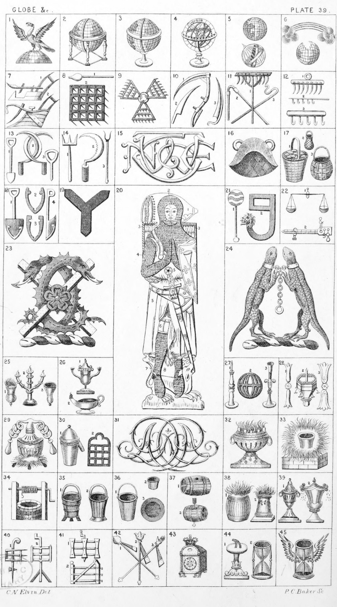

Plate 39.

Plate 39.
- Demi Globe, or Northern Hemisphere thereon an Eagle wings expanded
- Globe Terrestrial in frame environed
with a meridian
- Globe Terrestrial with stand environed with a meridian
- Armillary sphere
- A Terrestrial and Celestial Globe
- A Broken, or fractured Globe under
a Rainbow with Clouds at each
end all ppr. Crest of Hope. Rain-
bow. Globe Fractured
- Two Ploughs
- Plough paddle 1. Harrow 2
- Three triangular Harrows conjoined
in fesse point with a ring
- Scythe, or Sithe i. Coulter 2.
Scythe blade 3
- Rake I. Flail 2. Shepherd's-crook 3
- Tillage-rake head 1 and 3. Thatchrake 2
- Mole-spade 1. Sickles, or Reaping-hooks interlaced 2. Dibble 3
- Dung-fork 1. Sickle with teeth, or
Serrated 2. Pitch-fork 3
- Monogram T.W.N.E.
- Winnowing-basket, Shruttle,
Scruttle, Fruttle, Fan, or Vane
- Basket with loaves, or a Basket full
of Wastel cakes 1. Basket as in
the arms of Littlebury 2. Basket
as in the arms of Wolston 3
- Spade 1. Spade irons 2 and 3.
Half-spade 4
- Hay-Fork, or Shake-Fork
- A Brass. Heaume, or Bascinet 1.
Coif de mailles 2. Ailettes 3. Hawberk 4. Surcoat 5. Poleyns 6.
Pryck spur 7. Chausses 8. Sir
Roger de Trumpington, 1289
Trumpington, Camb.
- Scoop 1. Hay-hook, also termed a
Horsepicker. 2.
- Pair of Scales 1. Steelyard, or
Statera Romana 2
- On a Saltire, or interlaced by two
Amphisbaenae az. langued gu. a
rose of the last barbed and seeded
ppr. Crest of Gwilt
- Two scaly Lizards erect on their
hind feet combatant ppr. each
gorged with a plain collar or, the
collars chained together, a chain
with a ring at the end pendent
between the two lizards of the last
- Lamp inflamed, borne by Tanner 1.
Antique Lamp as borne by the
family of Leet 2. Lamp as in
Berry's Heraldry 3
- Roman Lamp i. Hand, or Burning
Lamp 2
- Taper Candlestick with Candle inflamed 1. Globular, or Ship's
Lamp, also termed a Lantern 2.
Taper Candlestick 3.
- Candlestick 1 and 3. Mortcours as
in the armorial Bearings of the
Wax-Chandlers Company 2
- Distillatory
- Still 1. Limbeck, or Alembeck 2
- Cyphers A.D. Reversed
- Flaming Brazier
- Fiery-Furnace
- Well with frame and handle
- Bucket, or Well-bucket, also termed
a hooped bucket 1. Bucket 2
- Fire Bucket 1. Cup 2. Dish 3
- Tun, Barrel, or Cask 1, Bolt and
Tun 2
- Tun erect inflamed 1. Altar inflamed 2
- Urn 1. Salts, Salt-cellar, or Sprinkling Salt 2
- Two examples of Turnpikes
- Turnpike 1. Gate 2
- Goog 1. Ullum 2. Punja 3
- Clock as borne by the Clock Makers'
Company
- Sundial 1. Hour-glass, or sand-glass 2
- Hour-glass winged